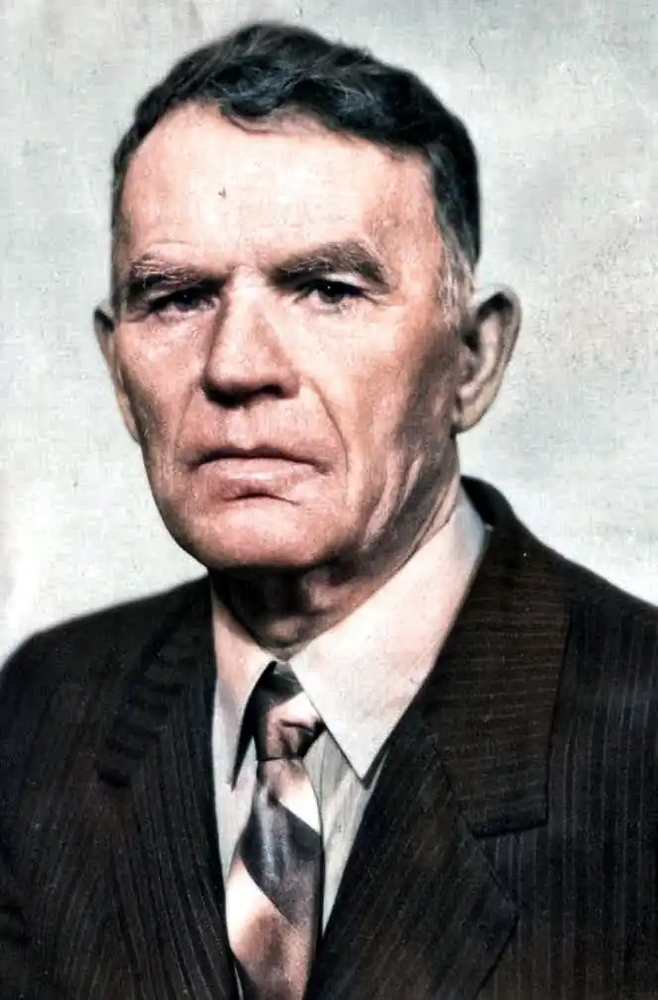
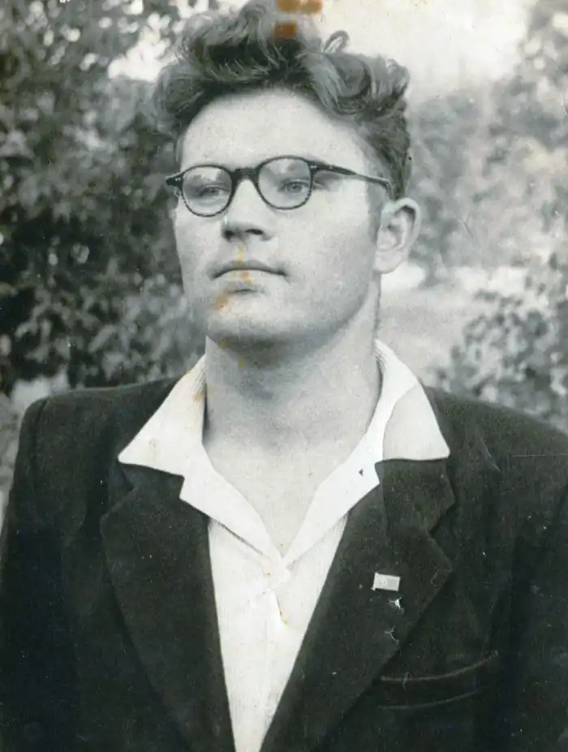

Народився Леонід Куліш-Зіньків 2 травня 1942 року в селі Кричильськ на Рівненщині. Його батьками були прості, працьовиті та мудрі люди. Особливо неординарною людиною був батько Леоніда — Зіновій Іванович Куліш, який прославився на все село своїм талантом пересмішника. Старий Зінько настільки допікав дотепним словом багатьом з нікчемних типів, а почасти навіть владі, що доводилося не раз підставляти свою долю й долю родини під небезпеку. А розумні кричиляни цінували талант Зінька Куліша як гумориста-імпровізанта. Цей талант перейняв у батька й син Леонід. Батькові пощастило почути й побачити, що вийшло з його сина. Відомо, що діти ідуть далі батьків. Леонід Зіновійович також пішов значно далі свого батька. Зіновія Івановича з його гумором знало все село, а сина – уся Україна… 26 збірок Леоніда Зіновійовича побачили світ за його життя, але ще чимало його творів залишилося не надрукованими й чекають свого часу.
Вищу освіту Леонід Куліш-Зіньків здобув у Луцьку, став учителем історії та прекрасним письменником-гумористом. У студентські роки з'явилася його перша публікація в республіканській пресі. У Луцьку він познайомився з письменниками та поетами Волині, й відомий поет Володимир Лучук запропонував вірші Леоніда до колективного збірника "Пісня і праця", що вийшов у 1968-му році у видавництві "Каменяр". З роками тематика поезій молодого поета ширшає. Все частіше і частіше Леонід Зіновійович пише для дітей. Поезію його дитячої тематики постійно передає літературна редакція української радіомовної компанії, вони з'являються на сторінках дитячих журналів "Малятко", "Барвінок". Адже творити для дітей — значить, мати талант у квадраті, якщо не в кубі. Найменший читач відразу відчуває лукавість чи нещирість. Відтак не кожен твір, не кажучи вже про книгу, приймає до себе. Саме з написання дитячої книги "Як горобчик рахував" розпочав наш земляк своє сходження на Парнас. У житті кожної людини є пам'ятні, знаменні події, дати, що залишаються на все життя. Одна з них закарбувалася і для Леоніда Куліша: у 1990-му його прийняли до Національної спілки письменників України. А передував цій події вихід у світ дитячої збірки "Горобці про літо мріють" у видавництві "Веселка" . А потім одна за одною в інших видавництвах з'являлися друком його нові книженята для малят: "Дівонька-круглая голівонька", "Чого мовчала мишка", "Тридцять три сороки", "Кіт чекає на обід". Багата дитяча творчість Леоніда Куліша-Зіньківа й на жанровість. Тут і співанки, с і скоромовки, і загадки, і гуморески…
А які талановиті в Леоніда Куліша-Зіньківа пісні для дітей! На слова цього поета композитори так охоче пишуть музичні твори – безперечно, тому, що ті слова самі просяться в нотний зошит. З ним охоче працювали художники, читці, співаки, редактори. Любов до людей, до рідного краю сформувала поета. Саме з тієї любові витікає той незабутній струмок його самобутньої творчості, його мови. Леонід Зіновійович був прекрасним краєзнавцем, добре знав історію рідного краю. Не байдужою була для нього доля рідної землі, красуні Горині, навколишніх лугів і лісів. На фоні цієї життєдайної краси писав митець чудо – легенди, перекази, які прочитавши один раз – не можливо забути. Це історія рідного краю: "Синій вир", "Мшані кладки", "Погоня", "Турово", "Русявка", "Дівочий брід". Але це ще не все. Його твори перекладали, публікували в Росії, Білорусі, Молдові, Словакії, Канаді (на десяти мовах). Сьогодні ім'я Леоніда Зіновійовича Куліша-Зіньківа заслужено ставлять у ряд із найвідомішими українськими творцями художнього слова, насамперед у царині дитячої літератури. Не стало поета 27 квітня 2007 року. Його серце перестало битися 27 квітня 2007 року за вчительським столом в одній із Житомирських шкіл, куди його запросили на літературний урок... У травні 2009 року в Кричильській ЗОШ І-ІІІ ст. Сарненського району, де письменник віддав майже сорок років освітянській праці, на фасаді його рідного закладу встановили меморіальну дошку: "Відомий український письменник, класик дитячої літератури, маестро гумору та талановитий педагог" – напис внизу. А зверху до нас всміхається, ніби живий, Леонід Куліш-Зіньків. Інтелігентний, талановитий та працьовитий чоловік, якого не затягнула трясовина сільських буднів. Із повсякдення він черпав наснагу для своїх творів, пробуджував добро у душах малечі та дорослих, некрикливим словом учив любити свій край, свій народ, свою Батьківщину. Він гостро висміював людські пороки й слабкості й був при цьому великим гуманістом, глибоким ліриком, піснярем, над усе любив людей, рідну Україну. Він відстоював історичну правду та справедливість і вірив у щасливе майбуття рідного народу, творив світогляд, характер вільного та незалежного українця. Адже гумор і сатира Леоніда Куліша-Зінькова нікого не залишають байдужим, викликають такі хвилі сміху, наче дев'ятий вал котиться, виплескуючись у бурхливі, довго триваючі овації. Варто було Кулішу вийти на сцену, як вдячні присутні вставали і теплими оплесками зустрічали його. Життя Леоніда Куліша-Зіньківа — воістину справжня легенда, бо знайшов він своє місце на землі, закарбувавши чудовий слід у людській пам'яті назавжди. За матеріалами: https://kulish-zinkiv.at.ua/